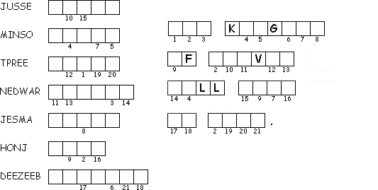

This Week: Isaiah 9:1-4, Psalm 27:1, 4-9, Corinthians 1:10-18, Matthew 4:12-23
Elementary School Pew-work
Use these words to fill in the blanks: father lake Galilee boat fishermen fish nets
While Jesus was walking along the shore of Lake ____________, he saw two brothers. One was Simon, also known as Peter, and the other was Andrew. They were _____________, and they were casting their net into the ________. Jesus said to them, "Come with me! I will teach you how to bring in people instead of _________." Right then the two brothers dropped their _________ and went with him.
Jesus walked on until he saw James and John, the sons of Zebedee. They were in a _________ with their father, mending their nets. Jesus asked them to come with him too. Right away they left the boat and their _________ and went with Jesus.
Who
owned the
boat?
__________________________________________________________________________
What
was Jesus doing in the
boat?
__________________________________________________________________________
What
happened when the fishermen took the boats into deep
water?
__________________________________________________________________________
What
did Jesus promise his
disciples?
__________________________________________________________________________

Created by Puzzlemaker at DiscoveryEducation.com
This Week: Isaiah 9:1-4, Psalm 27:1, 4-9, Corinthians 1:10-18, Matthew 4:12-23
This Week: Isaiah 9:1-4, Psalm 27:1, 4-9, Corinthians 1:10-18, Matthew 4:12-23
Middle-School Pew-work
How
can we still “be perfectly joined together in the same mind “
if we allow diversity and difference in our
church?
________________________________________________________________________
________________________________________________________________________
________________________________________________________________________
________________________________________________________________________
________________________________________________________________________
________________________________________________________________________
________________________________________________________________________
________________________________________________________________________
________________________________________________________________________
________________________________________________________________________

Next week: Exodus 24:12-18, Psalm 2 or Psalm 99, 2 Peter 1:16-21, Matthew 17:1-9